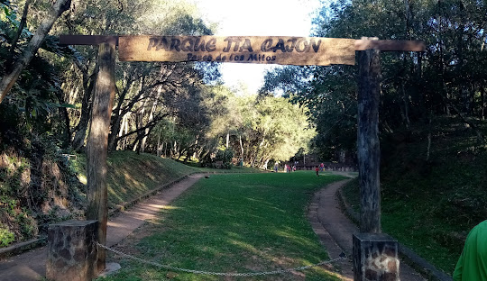
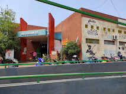
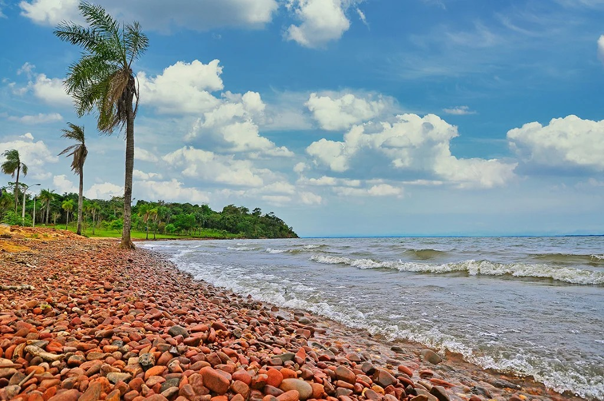
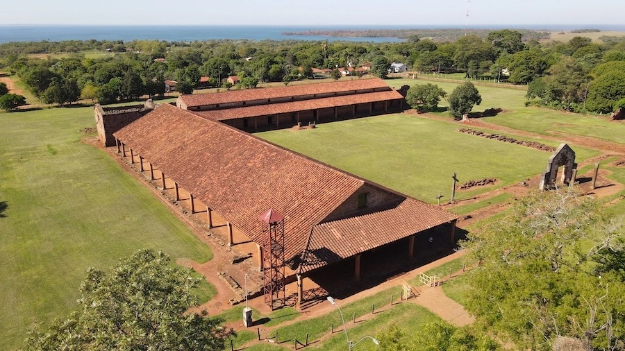
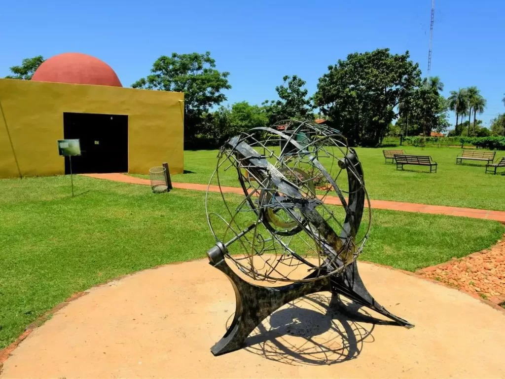
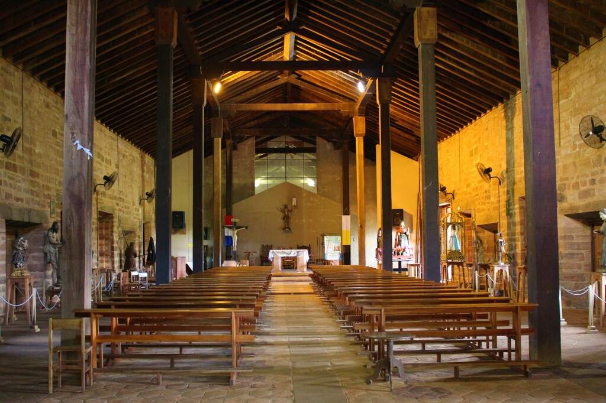

Misión Jesuítica de Jesús Tavarangue (afuera)
Misión Jesuítica de Jesús Tavarangue (interior)
Hospedajes en Jesús de Tavarangue
La Misión de Santísima Trinidad del Paraná, ubicada en Itapúa, es la reducción guaraní mejor conservada y más extensa del Paraguay.
La Misión Jesuítica de Santísima Trinidad del Paraná, ubicada en una colina a 28 km al noroeste de Encarnación, en el distrito de Trinidad, Itapúa, es la reducción guaraní mejor conservada y más extensa del Paraguay. Se puede acceder a ella desde la ruta VI.
Hospedajes en Trinidad
Encarnación es una ciudad situada en la orilla norte del Río Paraná

La Plaza de Armas cuenta con el Jardín Japonés con un estanque y pequeños puentes de madera.

En la ciudad se encuentra el Casino Carnaval
Feria municipal
Hospedajes en Encarnación
San Cosme y San Damián (comúnmente llamado San Cosme y Damián) es una de las ciudades que formó parte de los poblados fundados por la Compañía de Jesús (los jesuitas). Su origen se remonta al año 1632 y es una de las tres misiones jesuitas que sobrevivieron en Paraguay desde la expulsión de estos en 1767. Lo que más se ha preservado es su arquitectura.
Playa Municipal de San Cosme
Ruinas Jesuíticas de San Cosme y San Damián
Planetario
Iglesia de San Cosme y San Damián